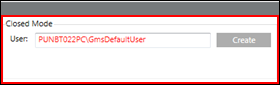
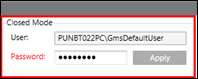

Closed Mode Settings
The Closed mode settings are required to run the system in Closed mode.
The first time you start SMC, the Closed mode settings allow you to create a default Desigo CC user account, which also creates a corresponding Windows user account in the Windows User Group. This account is required to run a Windows service that runs the Desigo CC Closed mode. You must type a password according to the domain policy and confirm it. The password is validated on save.

If you change the Closed mode user (GmsDefaultUser) password from Windows or if the Closed mode user password has expired, you must change the password of the Closed mode user and configure the Closed mode settings. You can do this in the Closed Mode section of the Settings expander that displays when you select the System node in the SMC tree.

If the Closed mode user password is not the same as the Windows user password, the SMC indicates this in red in the Closed Mode section in the Settings expander, see Configure Closed Mode User Settings.
NOTICE

Special Considerations when Applying Security for Closed Mode Configuration
1) GMSDefaultUser is Windows user that must have read/write access rights to the [Installation Drive:]\[Installation Folder]\[ Project Name] folder on the server (for example, C:\GMSProjects\MyProject).
Using Windows Explorer, you can enable such access in the security properties of the project folder.
For more information about folder security, refer to Windows documentation.
2) If you use a secure client/server connection, GMSDefaultUser must be included in the list of host certificate users of the project.